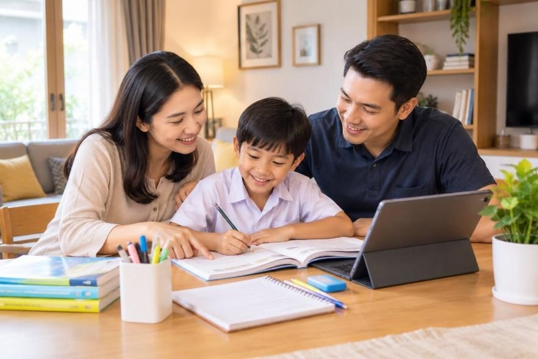

Anak Malas Belajar di Rumah? Ini Cara Orang Tua Mendampingi Tanpa Harus Marah-Marah

BANDUNG — Proses belajar di rumah sering kali menjadi tantangan tersendiri bagi banyak keluarga. Tidak sedikit orang tua yang merasa kesulitan saat mendampingi anak mengerjakan tugas sekolah, terutama ketika anak menunjukkan rasa bosan, kurang fokus, atau menolak untuk belajar.
Di tengah gempuran gawai dan hiburan digital yang menarik perhatian, membangun motivasi belajar anak membutuhkan pendekatan yang tepat dari orang tua. Mendampingi anak belajar tidak selalu berarti harus bersikap keras atau terus-menerus menuntut hasil nilai yang sempurna.
Kompas.com dalam artikel berjudul “Tips Orangtua Mendampingi Anak Belajar di Rumah” yang diterbitkan pada 15 Maret 2026 menjelaskan bahwa pola komunikasi yang persuasif, lingkungan yang kondusif, serta pemberian apresiasi secara tepat merupakan kunci penting agar anak dapat menikmati proses belajar tanpa merasa tertekan.
Ciptakan Suasana dan Area Belajar yang Nyaman
Langkah awal yang dapat dilakukan orang tua adalah menyediakan tempat belajar yang mendukung di rumah. Tempat tersebut tidak harus berupa kamar khusus, melainkan sudut ruangan yang bersih, tenang, serta terbebas dari gangguan gawai atau televisi.
Peralatan belajar seperti buku, alat tulis, dan pencahayaan yang cukup sebaiknya disiapkan sebelum kegiatan belajar dimulai. Suasana rumah yang tenang dapat membantu konsentrasi anak tetap terjaga selama memahami materi pelajaran.
Selain itu, orang tua dapat melibatkan anak dalam menata meja atau area belajarnya sendiri. Ketika anak merasa memiliki ruang belajar yang sesuai dengan keinginannya, rasa nyaman dan semangat untuk mulai belajar akan lebih mudah tumbuh.
Buat Jadwal Belajar yang Konsisten dan Fleksibel
Membangun rutinitas belajar yang teratur sangat membantu anak memahami kapan waktunya bermain dan kapan waktunya fokus pada tugas sekolah. Kendati demikian, jadwal tersebut sebaiknya disusun secara fleksibel dan tidak terlalu padat.
Anak perlu diberikan jeda istirahat di antara sesi belajar untuk mengistirahatkan pikiran. Waktu istirahat singkat dapat diisi dengan minum, mengonsumsi camilan sehat, atau sekadar melakukan peregangan ringan.
Orang tua juga disarankan untuk mendiskusikan penyusunan jadwal ini bersama anak. Melibatkan anak dalam menentukan waktu belajar dapat menumbuhkan rasa tanggung jawab atas kewajibannya sendiri.
Gunakan Pendekatan Empati dan Berikan Apresiasi
Saat anak mengalami kesulitan memahami pelajaran, reaksi emosional seperti membentak atau membandingkan dengan anak lain justru dapat mematikan rasa percaya dirinya. Orang tua perlu hadir sebagai pendamping yang sabar dan siap mendengarkan kendala yang dihadapi anak.
Apresiasi tidak hanya diberikan saat anak meraih nilai tinggi di sekolah, tetapi juga atas usaha dan proses belajar yang telah ditunjukkannya. Pujian sederhana atas kegigihan anak mengerjakan soal yang rumit dapat meningkatkan motivasi internalnya.
Ketika orang tua menunjukkan empati dan dukungan yang konsisten, anak akan memandang kegiatan belajar bukan sebagai beban yang menakutkan, melainkan sebagai proses yang menyenangkan untuk mengeksplorasi hal-hal baru.
Oleh: Azmi Karima Salsabilla
Daftar Pustaka
Kompas.com, 15 Maret 2026, Tips Orangtua Mendampingi Anak Belajar di Rumah.
Kemdikbudristek, Sahabat Keluarga, 10 Januari 2026, Membangun Budaya Belajar yang Menyenangkan Bersama Anak di Rumah.